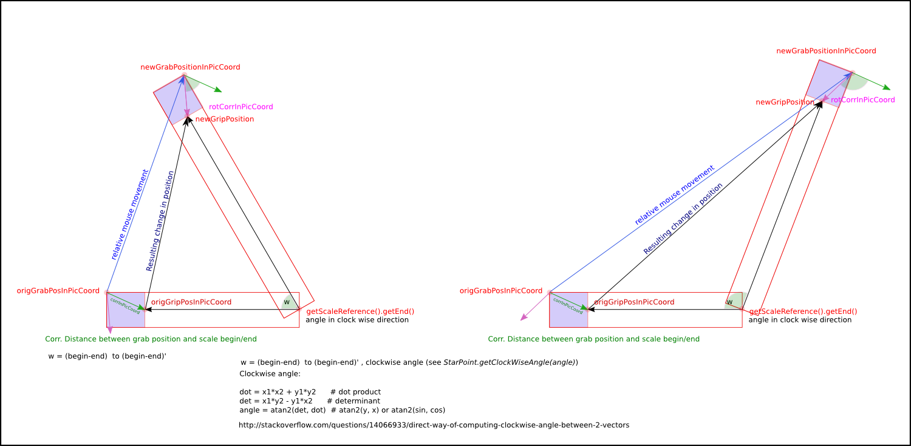

public class TemAdapterScaleTreatment
extends java.lang.Object
DrawableScaleReference movement in the
TEMView based on the mouse input from the user. The scale can be
transformed in several ways pressing the left, the center or the right grip.
The new grip position has to be calculated as shown in the picture below:

| Constructor and Description |
|---|
TemAdapterScaleTreatment(TEMView temview)
This only constructor is used to initialize the class members.
|
| Modifier and Type | Method and Description |
|---|---|
void |
treatGripMovement(java.awt.event.MouseEvent e)
Treats the situation, where one of the grips of the scale was pressed and
are now active for moving.
|
void |
treatGripReleased()
This function needs to be called in the
TEMAdapter, when the grip
is released by the user input. |
void |
treatLeftGripPressed(java.awt.event.MouseEvent e)
Treats the situation, where the left grip of the scale is pressed:
picture coordinates or the grab position and the grip position is
calculated and a corrective difference calculated between the grip and
the grab position.
|
void |
treatMiddleGripPressed(java.awt.event.MouseEvent e)
Treats the situation, where the middle grip of the scale is pressed:
picture coordinates or the grab position and the grip position is
calculated and a corrective difference calculated between the grip and
the grab position.
|
void |
treatRightGripPressed(java.awt.event.MouseEvent e)
Treats the situation, where the right grip of the scale is pressed:
picture coordinates or the grab position and the grip position is
calculated and a corrective difference calculated between the grip and
the grab position.
|
public TemAdapterScaleTreatment(TEMView temview)
DrawableScaleReference location and orientation parameters.temview - public void treatMiddleGripPressed(java.awt.event.MouseEvent e)
e - public void treatRightGripPressed(java.awt.event.MouseEvent e)
e - public void treatLeftGripPressed(java.awt.event.MouseEvent e)
e - public void treatGripMovement(java.awt.event.MouseEvent e)
DrawableScaleReference, that is member of
the TEMView - the class constructor parameter - is updated. This
function should be called after user scale movement in the
TEMAdapter.e - public void treatGripReleased()
TEMAdapter, when the grip
is released by the user input. After releasing the grip states are
reinitialized.